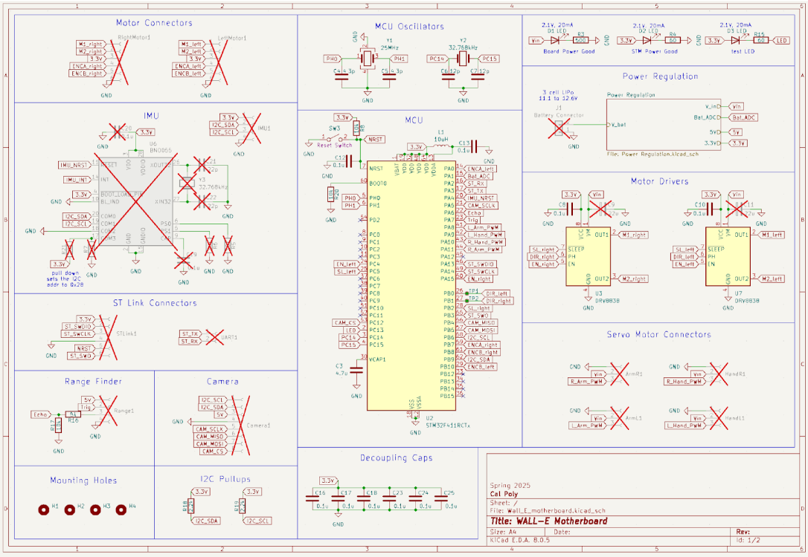
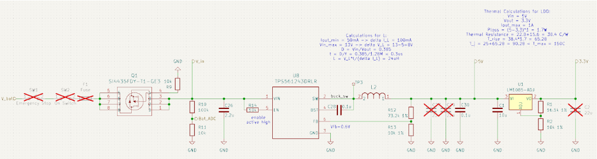
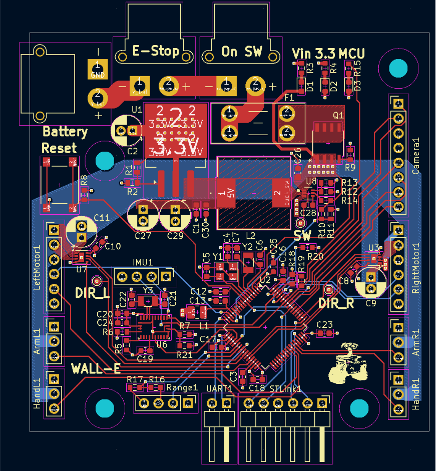

Overview
This page will explain the Electrical Design aspects of the WALL-E project from PCB design to pinout setup.
WALL-E Pinout Table
| # | Device | STM Pin | Function | Device Pin |
| 1 | Right Motor | PA15 | Digital Output | EN_right |
| 2 | | PB1 | TIM3_CH4 (AF2) | DIR_right |
| 3 | | PB7 | Digital Output | SL_right |
| 4 | | PB7 | TIM4_CH2 | ENCA_right |
| 5 | | PB8 | TIM4_CH3 | ENCB_right |
| 6 | Left Motor | PC4 | Digital Output | EN_left |
| 7 | | PB0 | TIM3_CH3 (AF2) | DIR_left |
| 8 | | PC5 | Digital Output | SL_left |
| 9 | | PA0_WKUP | TIM2_CH1 | ENCA_left |
| 10 | | PB10 | TIM2_CH2 | ENCB_left |
| 11 | Left Arm Servo | PA8 | TIM1_CH1 (AF1) | L_ArmPWM |
| 12 | Left Hand Servo | PA9 | TIM1_CH2 (AF1) | L_Hand_PWM |
| 13 | Right Hand Servo | PA10 | TIM1_CH3 (AF1) | R_Hand_PWM |
| 14 | Right Arm Servo | PA11 | TIM1_CH4 (AF1) | R_Arm_PWM |
| 15 | Camera | PB9 | I2C1_SCL(AF4) | I2C_SCL |
| 16 | | PB6 | I2C1_SCL(AF4) | I2C_SCL |
| 17 | | PC12 | Digital Output | CAM_CS |
| 18 | | PA5 | SPI1_SCK (AF5) | CAM_SCLK |
| 19 | | PA7 | SPI1_MOSI(AF5) | CAM_MOSI |
| 20 | | PB4 | SPI1_MISO(AF5) | CAM_MISO |
| 21 | Range Finder | PB5 | TIM3_CH2 (AF2) | Echo |
| 22 | | PA6 | Digital Output | Trig |
| 23 | IMU (BNO055) | PB6 | I2C1_SCL(AF4) | I2C_SCL |
| 24 | | PB9 | I2C1_SDA(AF4) | I2C_SDA |
| 25 | | PA4 | Digital Output | IMU_NRST |
| 26 | Battery | PA1 | ADC | Bat_ADC |
| 27 | LED | PC13 | Digital Output (active low) | N/A |
| 28 | STLink | PA13 | SYS Trace Async SW | ST_SWDIO |
| 29 | | PA14 | SYS Trace Async SW | ST_SWCLK |
| 30 | | NRST | SYS Trace Async SW | NRST |
| 31 | | PB3 | SYS Trace Async SW | ST_SWO |
| 32 | | A3 | USART2_RX | ST_TX |
| 33 | | A2 | USART2_TX | ST_RX |
PCB Design
Main Board Schematic

The main board for this project was designed around an STM32F411 microcontroller. The 48 pin version of this chip was needed because of how many sensors and actuators the total design required. To power the MCU as well as all of the other peripherals, a power regulation and distribution section was designed.
Power Regulation

The power regulation section first starts with the battery. A 3 cell LiPo battery was chosen for this project since its nominal voltage is near 12V. To protect the battery, a 5A fuse is placed in series with it. This current measurement was calculated based on the maximum powers and voltages of all the other components on the board plus a margin. This ensures that the fuse won’t blow under normal circumstances, only in the event of an emergency. A high resistance voltage divider is also placed on the battery voltage node so that the MCU can read the battery voltage and warn the user when the battery is getting low. Next, there is an on switch and an emergency stop button, both of which cut power to the entire system. After that is a reverse polarity protection MOSFET. Even though the power input connector (XT30) is polarized and cannot be physically plugged in backwards, this MOSFET is a backup to make sure that the board will never experience reverse voltage which would damage many components on the board. The power regulation continues with a buck converter which steps the 11.1V from the battery down to 5V. We chose to use a buck here for maximum efficiency since stepping the fully battery voltage down with an LDO would waste a lot of power. This choice ensures that Wall-E can last much longer on a single charge. 5V was also intentionally chosen as the step down voltage because it is needed to power multiple components on the board. Finally, an LDO is used to step 5V down to the 3.3V used by many other systems. An LDO makes more sense here since the voltage drop isn’t as large and the output on the 3.3V rail will be smoother which is nice for the microcontroller. Other than the power section and MCU section, the other main sections of the board are the IMU and the motor drivers. The IMU section is designed to mimic the BNO055 breakout board from Adafruit. Building it into the motherboard means that it is one less connector to worry about and all angles and accelerations will be physically tied to the motherboard. Unfortunately due to the current tariffs between the US and China, it was unviable to place this component on the board in the end. However, all the surrounding circuitry is still there if we ever want to solder one on ourselves in the future. The motors drivers are simple h-bridge motor drivers. They take 2 pwm signals in and then switch the motor leads between high and low depending on the PWM signals. This allows us to control the higher voltage and high current draw of the motors with the lower voltage and lower current output of the microcontroller. Since many of our peripherals could not be placed directly on the board, there were many pinheader connectors leading off from the microcontroller. These pin headers proved to be challenging to work with when actually building the robot because they had a tendency to fall out easily. In the future, I would redesign these to use locking connectors like JST. Besides the major components, decoupling capacitors were placed on all the power pins of all chips on the board. This is especially necessary for the motor drivers since they need a quick source of charge for current spikes when switching.
PCB Layout

The main considerations when laying out this motherboard were signal and power integrity as well as ease of use. The entire power section was laid out first to keep the noise of the switching regulator isolated to that section of the board. Larger traces were used when routing the power for the motors since they draw the most current on the board. An online PCB trace width calculator was used to verify that the traces were wide enough so that they would only heat up 50 degrees C when under max load. The board uses 4 layers: the top layer is the majority of the signals, the middle two layers are ground and 3.3V with one cutout in each to route thick 5V traces. And the bottom layer is used for only necessary signals and 12V power. The MCU was placed on a diagonal to ease routing and pins were chosen so that the peripherals would lay on the correct side of the chip when possible. Three indicator lights were placed together. The first lights up when the battery 12V reaches the board. The second lights up off the 3.3V rail implying that the whole power section is working correctly. Finally the third LED is connected to the MCU to be used for debugging and user feedback. The reset button was placed on the edge of the board for easy access. Test points were added to the inaccessible MCU lines like the motor controller PWM signals and buck switch node. Mounting holes were placed asymmetrically so the motherboard can’t be placed backwards accidentally. All headers were roughly placed on the side of the board that they needed to be accessed from in the final design. All decoupling capacitors were placed as physically close to the pins they are decoupling as possible. All traces were routed carefully with as few layer hops as possible. Finally, all components were placed close together but not too close where rework was impossible. In the end, we ended up having to rework 2 resistors which ended up being super easy because we used 0603 sized components and made sure there was enough space for a soldering iron on either side of every component on the board.